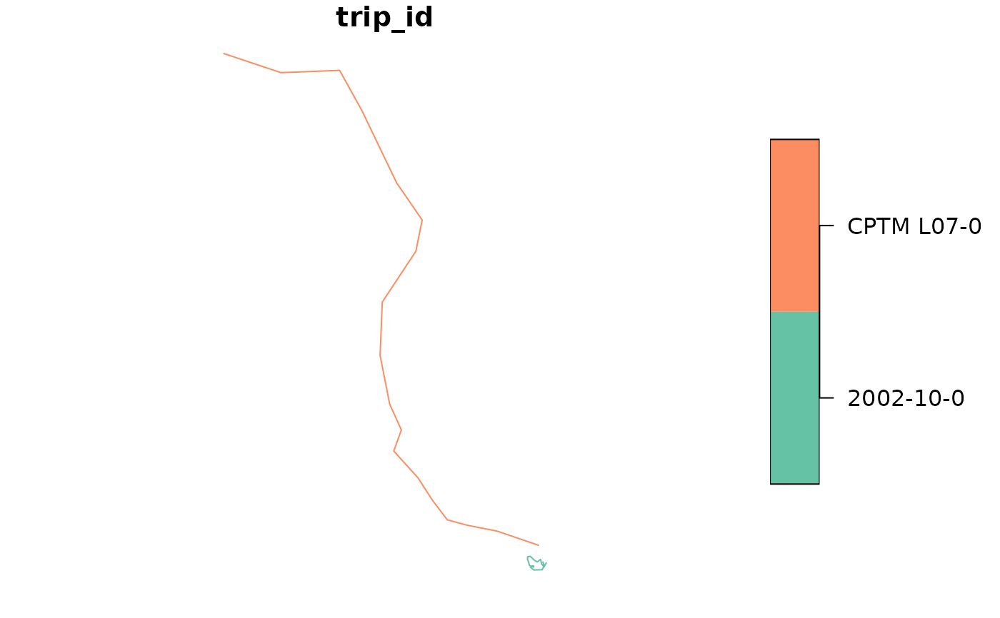

Returns the geometry of each specified trip_id, from its first to its last
stop, either along the trip's shape or as straight lines between stops.
Usage
get_trip_geometry(
gtfs,
trip_id = NULL,
method = "shapes",
crs = 4326,
sort_sequence = TRUE,
file = NULL
)Arguments
- gtfs
A GTFS object, as created by
read_gtfs().- trip_id
A character vector including the
trip_ids to have their geometries generated. IfNULL(the default), the function generates geometries for everytrip_idin the GTFS.- method
A string, either
"shapes"(the default) or"euclidean"."shapes"returns the part of the trip's shape, described in theshapestable, between its first and last stops, while"euclidean"links the consecutive stops of the trip along straight lines. If the GTFS object doesn't have ashapestable, or if itstripstable doesn't have ashape_idcolumn,"euclidean"is used instead, with a warning.- crs
The CRS of the resulting object, either as an EPSG code or as an
crsobject. Defaults to 4326 (WGS 84).- sort_sequence
A logical specifying whether to sort timetables and shapes by
stop_sequenceandshape_pt_sequence, respectively. Defaults toTRUE. Set toFALSEonly if these tables are known to be ordered. Geometries generated from unordered sequences do not correctly depict the trip trajectories.- file
Deprecated. Use
methodinstead (file = "stop_times"corresponds tomethod = "euclidean").
Details
With method = "shapes", the first and last stops of each trip are
projected onto its shape, as in get_trip_length(), and the geometry is the
part of the shape between them. Thus, its length matches the length
returned by get_trip_length() (when this length is not NA, see below),
and the limitations described there apply. Trips whose stops are all
located at the same point of the shape get a zero-length geometry.
Use convert_shapes_to_sf() for the geometry of entire shapes.
With method = "euclidean", the geometry links the consecutive stops of
each trip along straight lines (stops' coordinates are retrieved from the
stops table), so its resolution tends to be much lower than that of the
geometry generated from the shapes. Trips with a single stop get a
single-point geometry.
Both methods ignore stops with missing coordinates, or not listed in
stops (for which get_trip_length() returns NA lengths). Trips
without any stop with coordinates get an empty geometry, as do, with
method = "shapes", trips with fewer than two stops with coordinates or
not linked to a shape with at least two distinct points (the
latter with a warning). Geometries along shapes that cross the antimeridian
are not handled correctly.
Examples
data_path <- system.file("extdata/spo_gtfs.zip", package = "gtfstools")
gtfs <- read_gtfs(data_path)
# geometry along the shape from the first to the last stop of each trip
trip_geometry <- get_trip_geometry(gtfs)
head(trip_geometry)
#> Simple feature collection with 6 features and 1 field
#> Geometry type: LINESTRING
#> Dimension: XY
#> Bounding box: xmin: -46.64446 ymin: -23.65102 xmax: -46.56817 ymax: -23.43291
#> Geodetic CRS: WGS 84
#> trip_id geometry
#> 1 2002-10-0 LINESTRING (-46.62959 -23.5...
#> 2 2105-10-0 LINESTRING (-46.58098 -23.4...
#> 3 2105-10-1 LINESTRING (-46.61683 -23.5...
#> 4 2161-10-0 LINESTRING (-46.56992 -23.4...
#> 5 2161-10-1 LINESTRING (-46.63553 -23.5...
#> 6 4491-10-0 LINESTRING (-46.62075 -23.6...
# straight lines between consecutive stops
trip_ids <- c("CPTM L07-0", "2002-10-0")
straight_geometry <- get_trip_geometry(
gtfs,
trip_id = trip_ids,
method = "euclidean"
)
straight_geometry
#> Simple feature collection with 2 features and 1 field
#> Geometry type: LINESTRING
#> Dimension: XY
#> Bounding box: xmin: -46.8719 ymin: -23.55212 xmax: -46.62962 ymax: -23.19564
#> Geodetic CRS: WGS 84
#> trip_id geometry
#> 1 2002-10-0 LINESTRING (-46.62962 -23.5...
#> 2 CPTM L07-0 LINESTRING (-46.63544 -23.5...
plot(straight_geometry["trip_id"])
